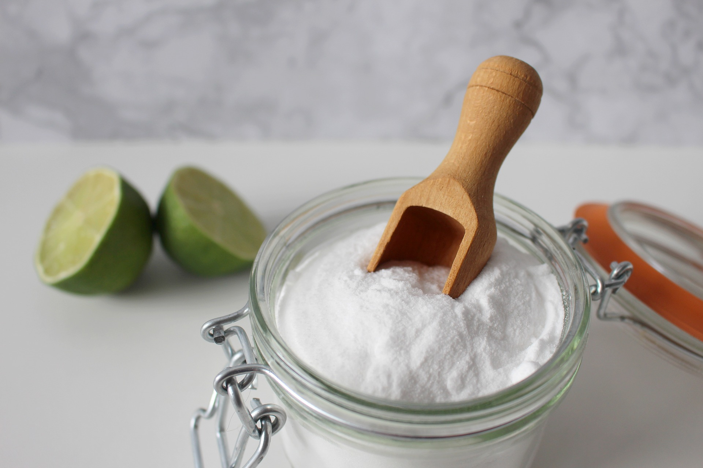

Honey and Aloe Facial Cleanser

Intro
Instructions
Combine all the ingredients. That's it! This cleanser can be stored in a sealed jar (I use a Mason jar) or a soap dispenser. Either method works, it's completely up to you. If you're using a jar, I recommend using a spoon to scoop the cleanser into your hand to avoid introducing bacteria to the cleanser. Store the cleanser at room temperature for a couple of months. If you're using fresh aloe, store the cleanser in the fridge since the aloe may spoil quickly. I use a nourishing oil in this recipe, but you can still make a great cleanser without it (hence the optional clause).
Ingredients
- 1/4 cup honey
- 1 TB extra virgin olive oil or jojoba, or sweet almond oil
- 1/4 cup aloe vera gel Aloe vera is a common ingredient used to treat sunburns due to its soothing and antioxidant properties. "Find more in this article from Mind Body Green is very insightful.